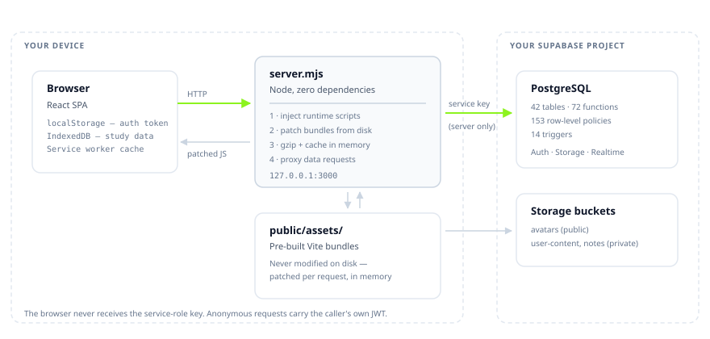

Architecture
IsotopeAI is one Node process with no runtime dependencies. It serves a pre-built React application, rewrites those bundles on the way out, and proxies data to your Supabase project.

One file, no dependencies #
server.mjs is around 10,000 lines and imports nothing outside the Node
standard library plus two local modules. package.json lists zero
dependencies and zero devDependencies, which is why install
needs no build toolchain and cannot break from a transitive update.
Serve-time bundle patching #
The frontend in public/assets/ is a pre-built, minified Vite output.
The server does not modify those files on disk. Instead, each patched bundle has a
function that reads the file, performs exact string replacements, memoises the result
and returns a Buffer:
function getPatchedCommunityBundle() {
if (patchedCommunityBundle) return patchedCommunityBundle; // memoised
let raw = fs.readFileSync(COMMUNITY_BUNDLE_ABS, 'utf8');
if (raw.includes(ANCHOR_FROM)) {
raw = raw.replace(ANCHOR_FROM, ANCHOR_TO);
console.log('[CommunityPatch] applied');
} else {
console.warn('[CommunityPatch] anchor not found');
_criticalPatchFailures.push('community-anchor'); // surfaces as a UI banner
}
patchedCommunityBundle = Buffer.from(raw, 'utf8');
return patchedCommunityBundle;
}
There are 23 patched bundles and around 52 individual patches. They fix upstream crashes, neutralise a demo-data gate, disable a circuit breaker that could lock all Supabase calls for five minutes, and add features such as group chat and the leaderboard tab.
Anchors are matched against minified codeA patch anchor is an exact substring of the built bundle. Any frontend rebuild changes both the content hashes in the filenames and the minified identifiers, so anchors must be re-verified. Every patch logs on success and warns on failure, and failures also render a banner in the served HTML — a silent mismatch is the one failure mode worth engineering against.
Verifying patch health #
bash bin/isotope restart && sleep 6 # empty output means every anchor matched grep -iE 'anchor not found|String not found' ~/.isotope/logs/server.log # what did apply grep -E '^\[[A-Za-z]+(Patch|CrashFix|KeyboardFix)' ~/.isotope/logs/server.log | sort -u
HTML script injection #
Every HTML response is rewritten. Scripts that must run before the app are placed
before </head>; everything else is deferred to just before
</body> so first paint is not blocked.
| Injected | Position | Purpose |
|---|---|---|
| Origin constants | head | Supabase URL and anon key for the runtime. |
| Local-data guard | head | Per-user isolation of localStorage and IndexedDB keys. |
| Auth guard | head | Synchronous redirect for unauthenticated deep links, before React mounts. |
| Error boundary | body | Catches bundle load failures and offers recovery. |
| Premium script | body | Fetch interceptor and leaderboard builder. |
| Reload guard | body | Allows one service-worker reload per session. |
| Sync engine | body | JWT refresh, auto-sync, notification polling. |
Service worker caching #
/assets/ is served cache-first, which is correct for
content-hashed files but created a subtle failure: because bundles are patched at
request time, editing a patch changed the response without changing the filename. A
cached copy would be served indefinitely.
The cache name therefore includes a build token — a digest of VERSION
plus the server.mjs modification time:
const CACHE_SUFFIX = APP_VERSION + '-' + APP_SHA.slice(0, 12) + '-' + BUILD_TOKEN; const SHELL_CACHE = 'isotope-local-shell-' + CACHE_SUFFIX; const RUNTIME_CACHE = 'isotope-local-runtime-' + CACHE_SUFFIX;
Any edit to a serve-time patch now rotates both caches on the next load. The live
value is reported by /api/version as pwa_cache.
Recovery when a stale bundle still slips throughThe error boundary
detects a failed /assets/ load, purges caches and reloads once — stamped
per build in sessionStorage so it can never loop. If that attempt is spent,
it shows a "Refresh required" prompt instead of a black screen. Auth tokens and study
data are untouched: caches.delete() only clears HTTP responses, not
localStorage or IndexedDB.
Supabase proxy #
/__supa/* forwards to your project. Escalation to the service-role key
happens only for an authenticated admin:
const useServiceKey = ADMIN_MODE_READY && isAdminAuthed(req);
Every other caller is forwarded with their own Authorization header
plus the anon key, so row-level security still applies.
Feature-to-Supabase map #
Which features actually reach Supabase, which are local-first, and which are local on purpose. The distinction matters: “local-first” means the feature works offline and syncs later; “local only” means it never touches the network and that is intended, not a gap.
| Feature | Local store | Supabase object | Offline |
|---|---|---|---|
| Auth | Supabase session keys, isotope-auth-token | auth.users, public.users | Cached session restored |
| Session restore | isotope-bootstrap-cache | user_profiles, user_onboarding | Cached bootstrap fallback |
| Onboarding | isotope-onboarding | user_onboarding, user_profiles | Local cache |
| Profile & settings | isotope_user_profile_v2 | user_profiles.profile_data, user_settings | Local profile stands |
| Avatar | isotope_user_profile_v2 | avatars bucket | Local avatar stands |
| Focus sessions | IndexedDB sessions, isotope_sessions_v2 | finish_session_sync RPC, study_sessions_log | Pending queue |
| Daily stats | isotope_daily_logs_v2 | daily_user_stats | Local analytics |
| Tasks, subjects, habits, exams, timer | IndexedDB + isotope_*_v2 | Backup JSON in user-content | Fully local-first |
| Backup / import / smart sync | isotope_sync_metadata | user-content/backups/* | Skipped offline |
| Community & notifications | Group cache | groups, group_members, notifications | Online required |
| Admin routes | None | Service role / Management API | Unavailable offline |
| Update check, install scripts | ~/.isotope | None — GitHub API only | Skipped, by design |
The pattern worth noticing: everything a student produces while studying — tasks, sessions, subjects, habits, exams, timer state — is local-first and reaches Supabase only as a backup blob. Only community features genuinely require a connection, because they involve other people. That is why the app is usable on a phone with no signal.
SQL run order #
For a fresh project, in this order:
isotope-complete.sql— the whole schema. Idempotent, safe to re-run.Compatibility migrations in
sql/— only when upgrading an older install.sql/verify-security.sql— verification queries, not changes.
Upgrade-only patches, which a fresh install should skip:
| Patch | When you need it |
|---|---|
leaderboard-rls-fix.sql | The leaderboard renders empty. A legacy stats_own FOR ALL policy blocked public SELECT on user_stats_summary; this replaces it with public read plus own-row writes. Fresh installs already get the correct policy. |
community-patch-v6.sql | The cumulative community patch, and what /__admin/patch serves. Supersedes v4. |
performance-patch.sql, performance-indexes.sql | Indexes for RLS membership subqueries and leaderboard date sorts. |
Startup sequence #
Load and validate configuration
.envthen host environment. Exits on a malformedSUPABASE_URL.Bind the port
Listens on
0.0.0.0so a phone on the same network can reach it.Warm the patch cache
All patchable bundles are patched and 11 are pre-gzipped, sequentially to avoid a CPU spike.
Ensure storage buckets
Creates or reconciles the three buckets. Requires admin mode.
Run backfills
Seeds satellite rows for existing users. Requires admin mode.